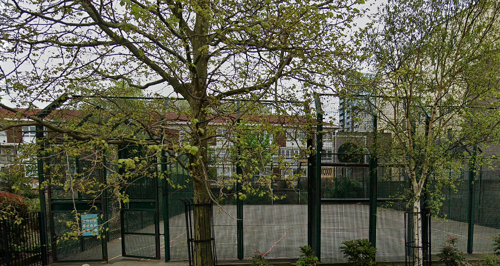

I have a number of hobbies but my main ones are playing football and gaming.
I also enjoy randomly messing around with different programming languages or
anything I am familiar with to just experiment and learn new things.
Football:
Chelsea FC is the team I support, they have been my favourite team since I was a
child and I learned about the team from my older cousin when he was teaching me
how to play FIFA.
Although I do not do this often now, I enjoy watching games when I can. I still
find it very entertaining even though the results of the game are often disappointing.
I haven't been to any games in person yet but I want to go to a few home games at least.
However, I do prefer watching at home as it is much more relaxing in my opinion than having
to be focused on the game the entire time.
For example, I went to the friendly game between England and Brazil in 2017 towards the end
of the year (14th November). It was very entertaining and even better because I went with
my class at the time and was able to get seats on the same row as my friends. After the game
ended though I was very tired and almost lost my voice which would never happen if I just
watched the game at home.
For the last couple of years or so I have been regularly playing football with my friends
weekly usually after Jummah prayer on Fridays. Depending on bookings, we play either at
the pitches by Mile End Leisure Centre or the closeby 11 a side pitch. If we want to just
have fun in a smaller group there is a cage concrete pitch that allows us to play whenever
we want to. Here is a picture of the pitch at Mile End:
Here is an image of the concrete pitch:

I look forward to this every week because it allows me to both catch up with my friends
while having fun at the same time. Also, because it is not something that is tied to for
example a school club etc. there is no pressure to do well or even attend if needed.
Recently, I've appreciated these football sessions even more as I have reconnected with
people from my secondary years that I haven't seen in a very long time.
Gaming:
I have been using computers for a very long time but I started with consoles specifically
the original XBOX. I mainly played Tom Clancy's Splinter Cell which I enjoyed for its stealth aspect
but as a child it was very difficult. This was both frustrating but fun as I slowly learned
how to get past the harder parts of the game.
After this I moved on to the PS3 where I mainly enjoyed playing FIFA both online and offline
against friends and some shooters such as Payday 2, COD: Black Ops 2 and COD: Modern Warfare 3.
However, for the last couple of years I have been playing games on my PC which I built with the help of a friend.
Here I learned a lot about the different components of a computer and the fragility of certain parts of it. For example,
the danger of not applying thermal paste to the CPU or how easily tangled the wires can become in an unorganised case making
it very difficult to upgrade or simply modify your system at a later point.